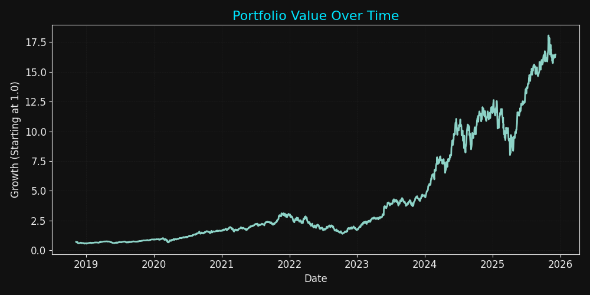

Executive Snapshot
Yearly return and volatility across assets.
Portfolio risk computed using covariance matrices and weight vectors.
Built with NumPy, Pandas, Matplotlib and yfinance.
User receives allocation pie charts, growth curves, risk plots and rolling volatility.

Portfolio Growth Curve
Visual Dashboard

Allocation Map
Weight distribution across assets, surfaced with a clean pie-style breakdown.

Risk vs Return
Annualised volatility vs expected return for each asset and the portfolio.

Rolling Volatility
30-day rolling volatility highlights periods of elevated market stress.
Methodology
1. Data Ingestion
Uses yfinance to download adjusted closing prices for a set of tickers,
aligned into a clean historical price matrix.
2. Return & Covariance Model
Computes daily returns, annualises mean and volatility, and constructs a covariance matrix to capture relationships between assets.
3. Portfolio Construction
Applies user-defined weights to derive portfolio-level return, risk, and Sharpe ratio, then visualises key outputs in a dark, Citadel-style layout.